Sua base não é um depósito de caixotes. É a sua fortaleza mental.
O PZ: Cozy Living transforma seu refúgio num ecossistema vivo e tático. Posse de residência, durabilidade de higiene, conforto rebalanceado, infraestrutura elétrica/hídrica e clima sazonal decidem quem sobrevive e quem sucumbe à loucura.
Comparativo Operacional: Nem Toda Casa é o Seu Lar
Entenda por que saquear a casa do vizinho não traz paz de espírito na v1.7.1.
Casa Neutra ou Abandonada
Qualquer residência não reivindicada por você. Serve apenas como abrigo temporário contra a chuva e zumbis do lado de fora.
- Conforto Travado em 0 pts: O cérebro do sobrevivente não relaxa em território desconhecido.
- Aclimatação Desativada: Sem dreno passivo de estresse e sem bônus de aprendizado.
- Alerta no HUD: O painel exibe aviso constante de 'IMÓVEL NEUTRO'.
Seu Porto Seguro Oficial
Residência estabelecida como Lar oficial via menu de contexto no Single Player ou Safehouse registrada no Multiplayer.
- Conforto Pleno (até 100 pts): Desbloqueia os 4 Tiers de Moodles psicológicos e sono regenerativo acelerado.
- Notificação em Halo: Aviso visual e sonoro elegante ao cruzar o perímetro de entrada e saída.
- Blindagem Mental: Dreno contínuo de estresse e tédio enquanto realiza tarefas domésticas.
Simulador Visual de Cômodo & Retornos Decrescentes
Clique nos elementos do quarto para adicionar mobílias e decorações. Observe o conforto, os limites de categoria e o impacto do squalor em tempo real.
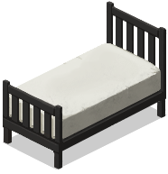
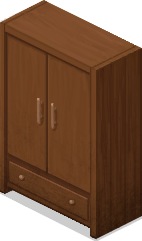
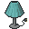
Enciclopédia Técnica & Módulos Operacionais
Mapeamento conciso e didático dos 4 sistemas essenciais do Housing Care System v1.7.1.
Protocolo de Posse de Residência
Nem toda casa é o seu lar. No v1.7.1, casas não reivindicadas mantêm o conforto travado em 0 pts e a aclimatação suspensa.
- Single Player: Clique com botão direito no chão interno e selecione 'Estabelecer Residência como Meu Lar'.
- Multiplayer: Integração nativa com Safehouses oficiais de proprietários ou moradores.
- Halo HUD: Notificação visual de borda e som tático ao entrar e sair da área do refúgio.
Higiene Bucal & Durabilidade da Pasta
Escovar os dentes restaura o senso de civilidade, cortando o estresse pela metade e prevenindo o colapso mental.
- Requisitos: Pia com água sanitária ou encanada + Escova + Tubo de Pasta de Dente.
- Barra de Durabilidade: Cada escovação consome 5% da pasta (barra verde B42 visível no inventário).
- Buff 'Hálito Fresco': -15 Estresse, -10 Tédio e proteção moral durante 4 horas in-game.
Rebalanceamento Econômico (v1.7.1)
Casas simples agora exigem trabalho para alcançar o nível Santuário. A pontuação foi cortada pela metade para garantir progressão satisfatória.
- Piso Limpo: Reduzido de 25 para 10 pts (casa vazia = Tier 0).
- Móveis: Camas de Luxo 10 pts, Sofás 7 pts, Mesas 4 pts, Cadeiras 3 pts.
- Clutter 3D: 0.1 a 0.6 pts com teto de categoria estipulado em 25 pts.
Painéis de Infraestrutura & Inspeção
Monitore suas redes de suprimento e diagnostique a qualidade de cada cômodo sem telas pretas ou erros de JVM.
- Tecla [J]: Painel da Base com combustível do gerador, água em barris e renomeação de refúgio.
- Tecla [K]: Inspetor de Cômodo com quebra de linha ajustada e altura dinâmica.
- Estabilidade: Salto por janelas trancadas 100% blindado contra erros da JVM.
Galeria Tática de Moodles & Efeitos Mentais
Os ícones oficiais do Project Zomboid e do mod Cozy Living. Entenda como o santuário protege a mente do seu sobrevivente contra o colapso e como a sujeira corrói sua sanidade.
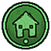
Ambiente básico arrumado. Dreno passivo leve de tédio (-15%) e regeneração de sono 10% mais rápida.
Cama confortável e mobília básica. Neutraliza ansiedade pós-combate e acelera descanso em 25%.
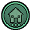
Decoração 3D, isolamento térmico e boa iluminação. Aumenta taxa de aprendizado de livros de skill (+25% XP).
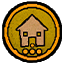
O ápice da sobrevivência. Imunidade total à tristeza dentro da base, sono ultra-reparador e regeneração mental contínua.
Conforto térmico no abrigo no frio. Estabiliza a temperatura do corpo, acelera em 40% a cura de resfriados e impede hipotermia.
Mente serena no santuário. Supressão drástica do pânico inicial ao avistar zumbis invadindo o perímetro da base.
Partir em expedição a partir de um santuário impecável concede dupla rolagem de itens raros em contêineres fechados.
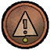
Poeira acumulada e pegadas de lama. Alerta no inspetor [K] recomendando varrição regular com vassoura.
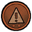
Zumbido de moscas perceptível e manchas secas de sangue. Desconforto contínuo impede sono profundo.
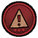
Anula imediatamente todo o conforto do cômodo para 0 pts. Sobrevivente sente nojo e estresse acelerado.
Carne podre ou zumbis apodrecendo dentro. Causa náusea severa imediata, ânsia de vômito e febre infecciosa.
Manual de Operações & Guia de Sistemas (How-To Guide)
Aprenda como cada sistema funciona em detalhes, instruções passo a passo in-game, requisitos e impactos de negligência.
O Porquê (Conceito ELI5)
Imagine que seu sobrevivente passa semanas correndo e lutando, mas no vanilla ele simplesmente não tinha onde aliviar suas necessidades biológicas com dignidade.
Na v1.6.0+, qualquer privada do jogo — de casas de subúrbio a cabines metálicas de postos de gasolina — agora é um sanitário funcional. O personagem realmente senta na louça e obtém alívio psicológico.
v1.6.7 Estabilidade Total: Inclui vacina Java de segurança (limpeza forçada de isSitOnGround ao levantar), impedindo que o avatar trave na animação de agachamento ou dispare erros de NullPointer no PZ B42.
Como Usar no Jogo
- 1Aproxime-se de qualquer privada residencial ou cabine sanitária pública.
- 2Clique com o botão direito diretamente sobre o tile do vaso sanitário.
- 3Selecione a opção 'Usar Banheiro'. O sobrevivente sentará na privada com postura natural e realizará o ciclo de alívio sem travar.
Itens & Requisitos
Qualquer tile de privada residencial ou cabine pública (ex: fixtures_bathroom_01_0..11, fixtures_bathroom_02_*).
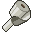
Base.ToiletPaper (Recomendado)
v1.6.7 Vacina Anti-Crash Java
Água na rede (Opcional)
Impacto: Cuidar vs Negligenciar
O Porquê (Conceito ELI5)
Ninguém gosta de carregar um rolo de papel higiênico dentro da mochila de combate o tempo todo. O lugar natural do papel é na gaveta ou prateleira ao lado do vaso!
O mod vasculha o seu inventário e também recipientes a 1 tile de distância. Mas se você usar o banheiro sem papel nenhum, a ação ainda acontece (ninguém explode a bexiga), mas o asseio é quebrado com força.
Como Usar no Jogo
- 1Guarde rolos de papel higiênico em qualquer gaveta, balcão ou armário colado na privada (raio de 1 tile).
- 2Ao usar o vaso, o sistema detecta o rolo automaticamente e gasta 1 unidade de durabilidade.
- 3Se não houver papel por perto nem na mochila, o jogo emitirá um alerta de falta de asseio.
Itens & Requisitos
Base.ToiletPaper
Raio: 1 tile do vaso ou inventário
Impacto: Cuidar vs Negligenciar
O Porquê (Conceito ELI5)
Se você estiver no meio de uma expedição de caça ou saque na floresta a quilômetros de qualquer banheiro, você não precisa sofrer até estourar a bexiga.
Qualquer árvore ou arbusto denso serve como sanitário rústico improvisado de emergência para manter sua mobilidade física.
Como Usar no Jogo
- 1Aproxime-se de qualquer árvore ou arbusto grande no mapa.
- 2Clique com o botão direito sobre o tile da vegetação.
- 3Selecione 'Aliviar-se no Mato'. O personagem agacha e esvazia a bexiga.
Itens & Requisitos
Tile de vegetação densa (árvores médias/grandes ou arbustos de folhagem espessa).
Impacto: Cuidar vs Negligenciar
O Porquê (Conceito ELI5)
No apocalipse, sentir a boca limpa após dias comendo carne enlatada fria é o maior lembrete de que você ainda é um ser humano e não um animal selvagem.
Escovar os dentes funciona como um ansiolítico natural: drena pânico e estresse imediatamente sem criar vícios químicos como álcool ou cigarros.
Como Usar no Jogo
- 1Tenha em seu inventário 1 Escova de Dentes e 1 Tubo de Pasta de Dente com carga restante.
- 2Aproxime-se de uma pia sanitária que contenha água (da rede pública ou encanada por barril).
- 3Clique com o botão direito na pia e selecione 'Escovar os Dentes'.
Itens & Requisitos
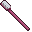
Base.Toothbrush
Base.Toothpaste (5% gasto/uso)
Pia sanitária com água
Impacto: Cuidar vs Negligenciar
O Porquê (Conceito ELI5)
Em versões antigas, esfregar o chão não consumia água e parecia infinito. Na v1.6.3+, a limpeza é tática e realista: cada piso faxinado drena unidades reais de água do seu balde e aplica desgaste mecânico calibrado na vassoura ou esfregão.
v1.6.4 Auto-Equip Bimanual: A ação ScrubFloor_Mop equipa o esfregão nas duas mãos automaticamente ao iniciar a faxina, sem exigir micromanagement no inventário.
v1.6.7 Decaimento de Squalor: A insalubridade residual agora se dissipa no ritmo configurado no sandbox (SqualorLingerHours), garantindo que a casa limpa recupere rapidamente a aura restauradora.
Como Usar no Jogo
- 1Tenha uma Vassoura ou Esfregão (Mop) no inventário ou na mochila (o sistema auto-equipa com as duas mãos).
- 2Mantenha por perto um Balde com Água Limpa (
Base.BucketWaterFull) e Água Sanitária (Bleach). - 3Clique com o botão direito no chão manchado e selecione 'Limpar Sangue' ou 'Limpar Chão'. O sobrevivente assume a postura tática de esfregação e limpa os tiles sequencialmente.
Itens & Requisitos
Base.Mop (Auto-equip 2 mãos)
Base.Broom
Base.BucketWaterFull (Consome água)
Base.Bleach (Essencial p/ sangue)
Impacto: Cuidar vs Negligenciar
O Porquê (Conceito ELI5)
Assim como na vida real, pias e banheiras acumulam lodo e resíduos com o uso contínuo. Lavar roupas sujas de sangue na pia encarde o ralo rapidamente.
Peças sanitárias imundas atraem moscas invisíveis e emitem uma aura negativa que invalida o descanso do quarto anexo.
Como Usar no Jogo
- 1Tenha na mão uma Esponja (Sponge), Pano de Prato (Dish Cloth) ou Toalha.
- 2Tenha Água Sanitária (Bleach) ou Sabonete com carga no inventário.
- 3Clique com botão direito sobre a louça sanitária e selecione 'Limpar / Desinfetar Peça'.
Itens & Requisitos
Base.Sponge / Base.DishCloth
Base.Bleach / 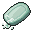
Base.Soap2
Vaso, Pia ou Banheira
Impacto: Cuidar vs Negligenciar
O Porquê (Conceito ELI5)
Deixar um bife cru ou uma melancia apodrecer em cima da mesa contamina todo o ar da casa. No mod, comida estragada solta fora de gavetas atua como um emissor biológico de squalor.
Ao mesmo tempo, para quem gosta de decorar com livros e ferramentas soltas no chão, o mod possui um teto seguro de 10 itens decorativos por tile antes de considerar sujeira.
Como Usar no Jogo
- 1Nunca jogue itens comestíveis estragados no piso ou sobre mesas abertas.
- 2Transfira alimentos podres para uma Lixeira (Trash Can) e use a ação 'Esvaziar Lixeira'.
- 3Ou guarde em Compostores externos para gerar adubo fértil de agricultura.
Itens & Requisitos
Impacto: Cuidar vs Negligenciar
O Porquê (Conceito ELI5)
Ficar sentado num quarto silencioso olhando para a parede dá agonia em qualquer um. Mas ligar o rádio para ouvir música clássica ou uma fita VHS na TV traz conforto imediato.
O LV_LeisureSystem monitora se há aparelhos de TV ou rádio tocando dentro de um cômodo que possua Tier Confortável (Tier >= 1), multiplicando a drenagem de tédio vanilla do jogo.
Como Usar no Jogo
- 1Posicione uma TV com energia elétrica ou um Rádio com bateria funcional no quarto ou sala.
- 2Ligue o aparelho e ajuste o volume no mínimo (para não atrair zumbis pela janela).
- 3Permaneça descansando, lendo livros ou organizando caixas no mesmo cômodo.
Itens & Requisitos
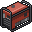
Energia (Gerador / Pilha) Cômodo em Tier 1 ou superiorImpacto: Cuidar vs Negligenciar
O Porquê (Conceito ELI5)
O inverno de Kentucky em temperaturas abaixo de 5°C é impiedoso. Sentar diante do fogo crepitante traz aquecimento físico e consolo psicológico.
Na v1.6.0, o gatilho da rotina 'Noite ao Redor do Fogo' foi atualizado para exigir mínimo de 1 jogador (antes exigia 2), permitindo que sobreviventes solo também aproveitem plenamente o bônus sazonal.
Como Usar no Jogo
- 1Abasteça uma lareira de pedra, fogão a lenha (Antique Stove) ou fogueira com troncos.
- 2Acenda o fogo com isqueiro ou fósforos entre as 18h e as 04h durante os meses frios.
- 3Sente-se próximo ao fogo (raio de 3 tiles). O buff será ativado automaticamente.
Itens & Requisitos
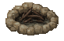
Lareira / Fogueira (<= 5°C) Troncos de madeira ou gravetos Mínimo de 1 sobrevivente no raioImpacto: Cuidar vs Negligenciar
O Porquê (Conceito ELI5)
Dormir no chão duro ou num sofá rasgado faz seu personagem acordar dolorido, cansado e mal-humorado. Uma cama limpa de casal com travesseiro macio restaura o corpo duas vezes mais rápido.
No mod, a qualidade do sono é multiplicada pelo Tier de Conforto do quarto, permitindo que você acorde mais cedo, com estamina cheia e sem dor muscular.
Como Usar no Jogo
- 1Equipe uma cama de boa qualidade no quarto (cama de casal ou de solteiro de carpinteiro).
- 2Mantenha 1 Travesseiro (Pillow) e 1 Lençol/Cobertor limpos sobre a cama ou no inventário.
- 3Feche as cortinas do quarto para vedar a luz antes de deitar para dormir.
Itens & Requisitos
Base.Pillow
Janelas vedadas com cortina
Impacto: Cuidar vs Negligenciar
O Porquê (Conceito ELI5)
Pense no sistema de "Ofensiva do Duolingo": cumprir pequenos deveres todo dia (arrumar a cama, escovar os dentes, banho) acumula dias de disciplina inquebrável.
Porém, a disciplina não sobrevive em um chiqueiro. Na v1.6.0, se a insalubridade do seu refúgio atingir o Squalor Tier 3 (sangue e lixo acumulados), seu streak é zerado para 0 com um alarme sonoro punitivo!
Como Usar no Jogo
- 1Abra a janela do Inspetor de Cômodo com a tecla [K] para conferir a Checklist Diária.
- 2Complete pelo menos 2 tarefas domésticas antes do meio-dia para manter o Streak vivo.
- 3Jamais permita que o Squalor ultrapasse 30% em sua casa para não sofrer o reset.
Itens & Requisitos
Impacto: Cuidar vs Negligenciar
O Porquê (Conceito ELI5)
Invadir a casa de um desconhecido e deitar na cama dele não te traz paz de espírito — você fica em alerta constante esperando alguém aparecer.
No mod, casas não reivindicadas são identificadas como 'IMÓVEL NEUTRO' com conforto travado em 0 pts. Para desbloquear os Tiers de serenidade, você deve formalizar a casa como seu Lar.
Como Usar no Jogo
- 1No Single Player: Entre na casa, clique com botão direito no piso interno e selecione 'Living House: Estabelecer Residência como Meu Lar'.
- 2No Multiplayer: Registre a casa como sua Safehouse oficial vanilla (o mod conecta automaticamente aos donos e moradores).
- 3Ao cruzar o perímetro da base, você verá um aviso Halo tático discreto confirmando sua entrada no santuário.
Itens & Requisitos
Impacto: Cuidar vs Negligenciar
O Porquê (Conceito ELI5)
Como saber se colocar mais uma cadeira vai realmente melhorar o quarto ou se já bateu no teto de retornos decrescentes? E o que fazer hoje na base?
O Inspetor aberto com a tecla [K] analisa todos os tiles do cômodo atual, exibe a pontuação categorizada e traz a Checklist Diária com objetivos claros para manter sua mente sã.
v1.6.7 Auditoria Elétrica: O checklist agora acusa automaticamente quando filamentos de luminárias e abajures queimam ([!] Lâmpada Queimada Detectada), indicando a necessidade de reposição antes do anoitecer.
Como Usar no Jogo
- 1Fique em pé dentro de qualquer cômodo da sua base reivindicada.
- 2Pressione a tecla [K] no teclado para abrir a janela de telemetria instantânea.
- 3Consulte a lista de tarefas diárias recomendadas (ex: 'Passar pano', 'Escovar dentes', 'Trocar lâmpada queimada', 'Arejar janelas').
Itens & Requisitos
[K]
Estar dentro de uma casa reivindicada
Telemetria de Lâmpadas (v1.6.7)
Impacto: Cuidar vs Negligenciar
O Porquê (Conceito ELI5)
No meio de uma tempestade ou cerco de zumbis, correr lá fora para checar se o gerador tem gasolina ou se os barris de chuva do telhado estão cheios é arriscado demais.
O Dashboard centralizado aberto na tecla [J] serve como o painel de controle da sua fortaleza: mostra água total armazenada, combustível restante e permite batizar sua base com um nome oficial.
Como Usar no Jogo
- 1Em qualquer área da sua base, aperte a tecla [J] no teclado.
- 2Veja os níveis consolidados de eletricidade e litros de água disponíveis.
- 3Clique no botão 'Renomear Base' para digitar um nome personalizado para o seu santuário.
Itens & Requisitos
[J]
Geradores ou barris no perímetro da base
Impacto: Cuidar vs Negligenciar
O Porquê (Conceito ELI5)
No Project Zomboid tradicional, para cozinhar você precisava abrir o inventário do fogão e colocar a panela lá dentro como se fosse um baú. Mas quem coloca uma panela dentro das chamas de uma fogueira ou chapa de ferro?
No v1.6.1+, você simplesmente solta a panela ou o bife diretamente sobre a chapa do fogão ligado no mundo 3D. O calor físico aquece, descongela e cozinha o alimento em tempo real, gerando cheiro, gordura no piso e exigindo atenção para não queimar e incendiar a casa!
v1.6.7 Otimização Sandbox: O ciclo de inspeção térmica agora obedece fielmente à opção sandbox StovetopCheckIntervalSeconds (padrão 12s), aliviando o processamento em servidores dedicados.
Como Usar no Jogo
- 1Ligue qualquer fogão (elétrico com luz, a gás ou fogueira/churrasqueira com lenha).
- 2Arraste uma Panela com água/ensopado, Frigideira com ovos ou Carne crua/congelada do seu inventário e solte no tile do fogão.
- 3Abra o Inspetor [Tecla K] para acompanhar o progresso:
[~] Cozinhando. Quando pronto ([OK] Servir), retire da boca do fogo antes que queime!
Itens & Requisitos
Fogão residencial ligado, churrasqueira ou lareira acesa.
Base.Pot, Base.Pan ou Alimento
Sandbox Calibrável (12s)
Extintor por perto
Impacto: Cuidar vs Negligenciar
O Porquê (Conceito ELI5)
Em uma base grande com dois andares, três banheiros e duas cozinhas, saber qual pia está entupida ou qual vaso sanitário precisa de desinfecção urgente era confuso e demorado.
Na v1.6.3, a tecla [U] abre um painel translúcido elegante que varre exclusivamente o seu edifício e divide tudo em abas: veja o cômodo onde você está agora ([ATUAL: Cozinha]) ou alterne para [TODA A CASA] para um diagnóstico completo.
Como Usar no Jogo
- 1Dentro da sua safehouse ou base residencial, pressione a tecla [U].
- 2Arraste a janela com o mouse pelo cabeçalho superior para posicionar onde for mais confortável na sua tela.
- 3Clique nas abas de cômodo (
[ATUAL],[TODA A CASA],Banheiro) para inspecionar a conservação das fixtures e acionar manutenções.
Itens & Requisitos
[U]
Estar dentro do edifício do Lar
Janela totalmente arrastável (Draggable)
Impacto: Cuidar vs Negligenciar
O Porquê (Conceito ELI5)
Pense no seu sobrevivente como um perito ou investigador tático: se ele dormiu no chão sujo com moscas zumbindo, sai para o apocalipse trêmulo e vasculha armários de forma apressada, ignorando compartimentos ocultos.
Na v1.6.5+, quem descansa em um santuário impecável (Tier 4) e faz suas refeições no aconchego do lar adquire o estado 'Foco de Explorador'. Ao abrir contêineres fechados pelo mundo, o sistema processa uma segunda rolagem probabilística (Dual Roll) para gerar itens valiosos adicionais.
Como Usar no Jogo
- 1Eleve o conforto da sua base acima de 80 pts (Tier 4) e elimine todo o Squalor (0% sujeira).
- 2Faça uma refeição quente e durma até descansar totalmente para receber a notificação do buff de Loot Luck.
- 3Saia em expedição de saque: ao abrir novos armários, baús, caixas de ferramentas e veículos, aproveite o aumento expressivo de itens raros.
Itens & Requisitos
AllowLootLuckBuff
Impacto: Cuidar vs Negligenciar
O Porquê (Conceito ELI5)
No inverno rigoroso de Kentucky, ficar dentro de uma casa fria e úmida é uma sentença quase certa de gripe ou pneumonia: o sobrevivente tosse alto, atrai hordas vizinhas e sofre lentidão.
Na v1.6.6+, acender uma lareira ou fogão a lenha em um quarto isolado por tapetes (+6 pts) ativa o estado benéfico 'Aquecido & Confortável'. O calor ambiente regula a temperatura do corpo e acelera em 40% a cura biológica de resfriados.
Como Usar no Jogo
- 1Posicione um Tapete acolchoado no quarto e mantenha cortinas fechadas para reter calor.
- 2Abasteça a lareira ou fogão com lenha e acenda o fogo durante os meses frios.
- 3Permaneça no raio de calor: observe o surgimento do moodle 'Aquecido', que interrompe tosses e drena sintomas de gripe.
Itens & Requisitos
Enable_Aquecido
Impacto: Cuidar vs Negligenciar
O Porquê (Conceito ELI5)
Imagine estar relaxando em casa quando uma janela é arrombada por zumbis. No vanilla, seu avatar entra imediatamente em pânico extremo, tremendo a mira e errando golpes vitais.
Na v1.6.6+, manter um lar consolidado e limpo confere o estado 'Alerta & Focado'. A confiança de estar defendendo o seu próprio santuário suprime o choque inicial do susto, mantendo a firmeza nos disparos e a precisão das lâminas.
Como Usar no Jogo
- 1Mantenha sua safehouse com boa infraestrutura, portas barricadas e nível de conforto acima do Tier 3.
- 2O buff 'Alerta & Focado' é mantido ativamente enquanto o sobrevivente opera dentro do perímetro da base.
- 3Em caso de invasão perimetral, reaja sem o tremor de pânico inicial, mantendo o controle cirúrgico da situação.
Itens & Requisitos
Enable_Alerta
Impacto: Cuidar vs Negligenciar
O Porquê (Conceito ELI5)
No apocalipse de 1993, as lâmpadas incandescentes não são infinitas. Deixar as luzes da casa ligadas sem parar eventualmente rompe o filamento de tungstênio pelo desgaste térmico.
Na v1.6.7, luminárias residenciais ativas possuem chance periódica de queima regulada no sandbox (LightBulbBurnoutChance). Quando uma lâmpada queima, o cômodo escurece, anula os bônus de iluminação e emite um alerta na Checklist de Manutenção [Tecla K].
Como Usar no Jogo
- 1Identifique a luminária apagada diretamente no cômodo ou consulte o Inspetor de Cômodo [Tecla K].
- 2Mantenha uma Lâmpada de reposição (
Base.LightBulb) no seu inventário primário ou secundário. - 3Clique com o botão direito na luminária apagada e selecione 'Substituir Lâmpada Queimada'. A luz acende instantaneamente restaurando a pontuação.
Itens & Requisitos
Base.LightBulb (Inventário)
Rede Elétrica / Gerador Ativo
Sandbox: EnableLightBulbBurnout
Impacto: Cuidar vs Negligenciar
Game Design Document (GDD) & Fórmulas
A matemática de cálculo, matriz de retornos decrescentes (v1.7.1) e arquitetura não-invasiva na JVM do PZ.
Fórmula de Conforto Residencial (v1.7.1)
Score Total = 0 a 100 ptsCada cômodo calcula sua pontuação somando as seguintes parcelas limitadas por tetos individuais:
Aconchegante
+5% sono, -5% estresse/h. Ideal para as primeiras semanas.
Confortável
+10% sono, -10% estresse/h, +10% XP treino.
Muito Confortável
+15% sono, -15% estresse/h, +15% XP treino.
Santuário Perfeito
+25% sono, -25% estresse/h, imunidade a pesadelos.
Matriz de Squalor & Degradação Biológica
Insalubridade = 0 a 100%O lixo e os restos mortais apodrecem o conforto de forma implacável:
Banco de Dados de Itens, Mobílias & Clutter 3D
Valores pontuais reais de conforto, durabilidade, IDs de script e inspeção técnica no estilo Tarkov. Clique em qualquer linha para inspecionar.
| Objeto / Item | Categoria | Pontuação Rebalanceada | Efeito Operacional | Requisitos / Como Usar |
|---|
Calculadora de Ações & Homemaking
Calcule os requisitos de insumos, tempo de execução, cooldowns e ganhos de moral para cada tarefa doméstica.
Configurações de Sandbox do Servidor
Tabela completa com as 15 variáveis sandbox oficiais e o impacto real de cada configuração.
| Identificador Sandbox | Tipo | Padrão | Efeito no Jogo |
|---|